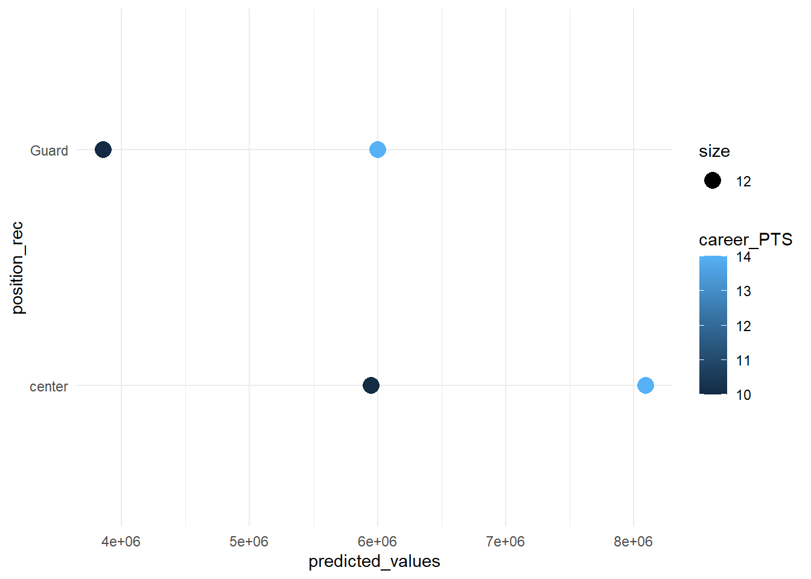

10 Prediction
Still WIP!
In prior weeks, you learned how to build a linear regression model. The main interest we pursued so far was to arrive at a good estimate of one independent variable (points scored in NBA basketball league) on an outcome (salary of NBA players).
10.2 R functions covered this week
lm(): This function is used to fit a linear model to the data. It takes a formula that specifies the dependent and independent variables, and a data frame that contains the variables. It returns a model object that can be used for further analysis.predict(): This function is used to make predictions from a fitted model object. It takes a model object and a new data frame that contains the values of the independent variables for which predictions are desired. It returns a vector of predicted values for the dependent variable.sqrt(): This function is used to compute the square root of a numeric vector. It can be used to calculate the root mean squared error (RMSE) as a measure of prediction accuracy.mean(): This function is used to compute the arithmetic mean of a numeric vector. It can be used to calculate the mean squared error (MSE) as a measure of prediction error.createDataPartition(): This function is from the caret package. It is used to create a random split of the data into training and testing sets. It takes a vector of outcomes, a proportion of data to be assigned to the training set, and an option to return a list or not. It returns a vector or list of indices for the training set.train(): This function is from the caret package. It is used to train a predictive model using different methods and tuning parameters. It takes a formula that specifies the dependent and independent variables, a data frame that contains the training data, a method that specifies the type of model, and a train control object that specifies how to train the model. It returns a model object that can be used for prediction and evaluation.trainControl(): This function is from the caret package. It is used to create a train control object that controls how the model is trained. It takes various arguments that specify the resampling method, the number of resamples, the selection metric, etc. It returns a train control object that can be passed totrain().glance(): This function is from the broom package. It is used to get a summary of a model object, such as the R-squared, adjusted R-squared, RMSE, p-value, etc. It takes a model object and returns a tibble with one row per model and one column per statistic.augment(): This function is from the broom package. It is used to add columns with predictions, residuals, and other information to the original data frame. It takes a model object and an optional new data frame for prediction. It returns a tibble with one row per observation and one column per variable or statistic.ggplot(): This function is from the ggplot2 package. It is used to create a wide variety of static, dynamic, and interactive graphics in R. The function allows you to specify a mapping from data to aesthetics (color, shape, size) and geometric objects (points, lines, bars). It also allows you to add statistical transformations, coordinate systems, faceting, and themes.geom_point(): This function is from the ggplot2 package. It is used to create scatter plots in R. It takes a mapping from data to aesthetics and other arguments that control the appearance of the points, such as shape, size, color, alpha, etc. It returns a layer that can be added to a ggplot object.geom_smooth(): This function is from the ggplot2 package. It is used to add a smoothed conditional mean or regression line to a plot. It takes a mapping from data to aesthetics and other arguments that control the appearance of the line or curve, such as method, formula, color, linetype, etc. It returns a layer that can be added to a ggplot object.geom_line(): This function is from the ggplot2 package. It is used to create line charts in R. It takes a mapping from data to aesthetics and other arguments that control the appearance of the lines, such as color, line-type, size, alpha, etc. It returns a layer that can be added to a ggplot object.geom_ribbon(): This function is from the ggplot2 package. It is used to create shaded regions between two y-values in R. It takes a mapping from data to aesthetics and other arguments that control the appearance of the ribbon, such as fill color, alpha value, line-type etc. It returns a layer that can be added to a ggplot object.library(): This function is used to load an installed package into R session so that its functions can be used. It takes one or more package names as arguments and loads them into memory.
With the help of DAGs, we identified relevant “confounders” we should adjust for to “isolate’ the effect of points as much as possible and reduce bias. COnfounders enter as covariates in in the model.
With the help of mediation analysis, we were then interested what “explains” or “mediates” the effect of x on y. We use additional variables which we assume operate as mechanisms of the causal effect of x on y and we test how much of the effect of x and y can be attributed to this mediator. In our example, we found that points scored do not really explain why guards earn less money in the NBA compared to centers.
All what we have done so far can be considered part of causal inference, i.e. understanding why an outcome varies. A different perspective is the perspective of PREDICTION.Prediction is at the heart of approaches in “data science” and “machine learning”.
In this scenario, we build regression models (or other models) simply to predict and outcome. The main interest is not to learn more about how the outcome can be explained but to predict something with it which we want to know. Machine learning then takes it a step further and simply iteratively select the best models among hundreds of options to arrive at the best possible prediction (more on that at the end of the class). First, we will learn how to predict values based on a linear regression model.
10.3 How prediction works
For a linear regression model, prediction is very straight forward. Linear regression is all about finding a straight line through a cloud of points that lie on as many dimensions as there are variables in model. The model provides you with an intercept (i.e. where the line touches the Y-Axis, and a slope; the increase in y given one unit increase in x. The unit is whatever the scale of the x variable is). The formula is \(y= b + ßx + €\). Any prediction is the on the line. You know the intercept, you plug in a value for x and you get your predicted y.
-> visual here.
Let’s apply this logic to our NBA data. Remember in prior weeks, we built a linear model to estimate the effect of points scored on average per game and salaries of players. Let’s assume we now want to predict salaries of players and don’t care too much about the scores. We can consider a range of variables which we think explain variation in salaries. The better we can capture variation in salaries between players, the more precise our prediction will be.
Now, you may rightfully ask: “Why do we want to predict salaries if we already know the actual salaries!?” Fair point. Prediction is commonly used to predict values which we don’t have. Imagine there are some players that don’t report their salaries. We could predict their salaries based on what we know from players who are similar to them in many other observable characteristics. Or imagine we want to predict the salary of a hypothetical player that does not exist. Imagine an average players would like to know how much he could earn more if player more like other players. We can predict that. Last example, imagine we want to forecast how much a player makes next year, depending on his past performance.
Machine learning is basically predicting outcomes that are no known based on very large datasets. You provide R with a million photos of animals, you build a model to explain which animal is a cat. The you apply the model to new data and the model predicts whether there is a cat in the photo. Of course, machine learning gets much more complicated quickly, however, the basic logic is the logic of prediction.
# recode "position" variables"
data_nba <- data_nba %>%
mutate(position_num = rowSums(across(c("position_center", "position_pf", "position_sf",
"position_pg", "position_sg"))),
position_rec =
case_when(
position_center==1 & position_num==1 ~ "center",
position_pf==1 & position_num==1 ~ "Forward",
position_sf==1 & position_num==1 ~ "Forward",
position_pg==1 & position_num==1 ~ "Guard",
position_sg==1 & position_num==1 ~ "Guard",
position_sg==1 & position_pg==1 & position_num==2 ~ "Guard",
position_pf==1 & position_sf==1 & position_num==2 ~ "Forward",
TRUE ~ "Mixed"))
model1 <- lm(salary ~ career_PTS + position_rec + season_start +
age, data = data_nba)
# base R way to get predicted values
data_nba$predicted_values <- model1$fitted.values
data_nba <- data_nba %>% dplyr::select('id', name, salary, predicted_values, everything())
data_nba %>%
ggplot(aes(x=salary, y=predicted_values)) +
geom_point() +
geom_smooth(method = "loess")# new tidyverse way to get predicted values
library(broom)
# broom package has nice features to work with models
# tidy() converts the model output into a dataframe, makes it easy to process further, e.g. make graphs etc.
tidy(model1)## # A tibble: 7 × 5
## term estimate std.error statistic p.value
## <chr> <dbl> <dbl> <dbl> <dbl>
## 1 (Intercept) -249332849. 12481898. -20.0 4.94e-87
## 2 career_PTS 535519. 7339. 73.0 0
## 3 position_recForward -1427352. 128521. -11.1 1.74e-28
## 4 position_recGuard -2087971. 122372. -17.1 2.43e-64
## 5 position_recMixed -1018362. 121431. -8.39 5.71e-17
## 6 season_start 122253. 6210. 19.7 1.23e-84
## 7 age 167093. 8251. 20.3 2.33e-89## # A tibble: 1 × 12
## r.squared adj.r.squared sigma statistic p.value df logLik AIC BIC
## <dbl> <dbl> <dbl> <dbl> <dbl> <dbl> <dbl> <dbl> <dbl>
## 1 0.424 0.424 3545558. 1192. 0 6 -1.61e5 3.21e5 3.21e5
## # ℹ 3 more variables: deviance <dbl>, df.residual <int>, nobs <int># augment creates a dataframe with the predicted values for everyobservation in the dataframe.
nba_salalary_predicted <- augment(model1)The output above, get you the predicted values for the observations in the dataset. This is mostly used to evaluate the model itself. The bigger the difference between the predicted values and the actual values (so-called residuals), the worse the model.
Now, let’s predict the salary of hypothetical players:
##
## center Forward Guard Mixed
## 1204 2130 3051 3343# create all combination of the control variables which you want to predict
prediction.data <- tibble(
position_rec = c("center", "center", "Guard", "Guard"),
career_PTS = c(10, 14, 10, 14),
age = c(20,20,20,20),
season_start = as.numeric(c("2017", "2017", "2017", "2017"))
)
# apply the model to the "new" dataset
predict(model1,
prediction.data)## 1 2 3 4
## 5948066 8090141 3860094 6002170prediction.data$predicted_values <- predict(model1,
prediction.data)
prediction.data %>% ggplot() +
geom_point(aes(position_rec, predicted_values,
color=career_PTS,
size=12)) +
coord_flip() +
theme_minimal()
We can see that there is a huge salary increase predicted for just making two more baskets (i.e. 4 points) on average each game, for both guards and centers. We also see that centers make more money generally.
There is another way to get predicted values using the margins() function.
library(margins)
# This gets you the average change in predicted value for a unit-increase in the all model variables.
margins(model1)## career_PTS season_start age position_recForward position_recGuard
## 535519 122253 167093 -1427352 -2087971
## position_recMixed
## -1018362## factor position_rec career_PTS AME SE z
## age 1.0000 10.0000 167093.1892 7741.6172 21.5838
## age 1.0000 14.0000 167093.1892 7840.0683 21.3127
## age 2.0000 10.0000 167093.1892 7842.4696 21.3062
## age 2.0000 14.0000 167093.1892 8000.9518 20.8842
## career_PTS 1.0000 10.0000 535518.9282 0.0000 Inf
## career_PTS 1.0000 14.0000 535518.9282 0.0000 Inf
## career_PTS 2.0000 10.0000 535518.9282 0.0000 Inf
## career_PTS 2.0000 14.0000 535518.9282 0.0000 Inf
## position_reccenter 1.0000 10.0000 2087971.3723 109409.2415 19.0840
## position_reccenter 1.0000 14.0000 2087971.3723 109409.2415 19.0840
## position_reccenter 2.0000 10.0000 2087971.3723 109409.2415 19.0840
## position_reccenter 2.0000 14.0000 2087971.3723 109409.2415 19.0840
## season_start 1.0000 10.0000 122252.7820 6263.2564 19.5190
## season_start 1.0000 14.0000 122252.7820 6263.2564 19.5190
## season_start 2.0000 10.0000 122252.7820 6263.2564 19.5190
## season_start 2.0000 14.0000 122252.7820 6263.2564 19.5190
## p lower upper
## 0.0000 151919.8982 182266.4801
## 0.0000 151726.9376 182459.4407
## 0.0000 151722.2313 182464.1471
## 0.0000 151411.6118 182774.7666
## 0.0000 535518.9282 535518.9282
## 0.0000 535518.9282 535518.9282
## 0.0000 535518.9282 535518.9282
## 0.0000 535518.9282 535518.9282
## 0.0000 1873533.1994 2302409.5452
## 0.0000 1873533.1994 2302409.5452
## 0.0000 1873533.1994 2302409.5452
## 0.0000 1873533.1994 2302409.5452
## 0.0000 109977.0250 134528.5390
## 0.0000 109977.0250 134528.5390
## 0.0000 109977.0250 134528.5390
## 0.0000 109977.0250 134528.5390The margins function is handy to calculate predictions for different groups. It automatically can hold other control variables at their mean or at their observed value.
Now, let’s also calculate confidence and prediction intervals. For background, watch these short videos to understand what they are [hyperlink] [hyperlink]. Confidence intervals basically tell how the following: “If we repeated our study on a different sample of people with the same sample size, then the estimate which we have (for example, a mean) would we within the confidence interval 95% of the time. This means in 5% of cases, our study would arrive at a lower or higher mean. The formula for confidence is not very intuitive:
-> formulate here: Margin of error = z * (standard deviation/ square-root of sample size)
Let’s not worry about why this formula works, but let’s focus on its ingredients: Sample size (N) is the number of people in our data; Standard Deviation is a measure for how much individual people deviate from the mean on average, in other words, how much the data spreads around the mean. and z is 1.96 and is derived from probability theory (i.e. in a normal distribution, there is a certain known likelihood that means fall within a range when re-sampling populations). In other words, the confidence intervals tells us how “confident” we can be that our estimate is within the range 95% of times.
Prediction intervals are very similar but only apply to predictions for specfific values. It gives us a measure for “confident” we can be that our prediction would be within the prediction interval (95% of times).
The 95% is an arbitrarily set value which is a standard in research. However, we can also set it at 99% or 90%.
Let’s apply this to our data.
# Just for illustration, let's take a simple model
model2 <- lm(salary ~ career_PTS, data = data_nba)
preds <- predict(model2)
preds[1:10]## 1 2 3 4 5 6 7 8 9 10
## 7219593 3460261 3460261 3460261 3460261 3460261 3460261 3460261 3460261 3460261# using geom_smooth, method=lm will automatically plot the confidence intervals
data_nba %>%
ggplot(aes(x=salary, y=career_PTS)) +
geom_point() +
geom_smooth(method = "lm")# let's get prediction intervals and add them to our dataset
data_nba_predict <- cbind(data_nba, predict(model2, interval = c("prediction")))
data_nba_predict %>%
ggplot(aes(x= career_PTS, y=salary)) +
geom_point() +
geom_line(aes(x=career_PTS, y=fit),
col="blue") +
geom_line(aes(y=lwr),
col="blue",
linetype="dashed") +
geom_line(aes(y=upr),
col="blue",
linetype="dashed")# same using geom_ribbon
data_nba_predict %>%
ggplot(aes(x=career_PTS,y=salary))+
geom_point()+
geom_line(aes(x=career_PTS,y=fit))+
geom_ribbon(aes(ymax=upr,ymin=lwr),color="red",alpha=0.7)
## # A tibble: 2 × 7
## term estimate std.error statistic p.value conf.low conf.high
## <chr> <dbl> <dbl> <dbl> <dbl> <dbl> <dbl>
## 1 (Intercept) -851914. 76417. -11.1 1.09e-28 -1001708. -702121.
## 2 career_PTS 552843. 7453. 74.2 0 538233. 567453.# get predictive intervals
augment(model2, interval= "prediction") %>%
ggplot(aes(x=career_PTS,y=salary))+
geom_point()+
geom_line(aes(x=career_PTS,y=.fitted))+
geom_ribbon(aes(ymax=.upper,ymin=.lower),color="red",alpha=0.7)Now, let’s compare the prediction interval for 2 different models.To compare the performance of models, you can use the r-squared (which measures how much of the variation in the outcome can be explained by your set of independent variables) and the mean squared error. For more background on both measures see here
The Mean squared error (MSE) represents the error of the estimator or predictive model created based on the given set of observations in the sample. It measures the average squared difference between the predicted values and the actual values, quantifying the discrepancy between the model’s predictions and the true observations. The lower the MSE, the better the model predictive accuracy, and, the better the regression model is.
model1 <- lm(salary ~ career_PTS + position_rec + season_start +
age, data = data_nba)
model2 <- lm(salary ~ career_PTS, data = data_nba)
# compared R-squared/ adjusted R-squared
glance(model1)## # A tibble: 1 × 12
## r.squared adj.r.squared sigma statistic p.value df logLik AIC BIC
## <dbl> <dbl> <dbl> <dbl> <dbl> <dbl> <dbl> <dbl> <dbl>
## 1 0.424 0.424 3545558. 1192. 0 6 -1.61e5 3.21e5 3.21e5
## # ℹ 3 more variables: deviance <dbl>, df.residual <int>, nobs <int>## # A tibble: 1 × 12
## r.squared adj.r.squared sigma statistic p.value df logLik AIC BIC
## <dbl> <dbl> <dbl> <dbl> <dbl> <dbl> <dbl> <dbl> <dbl>
## 1 0.361 0.361 3732168. 5502. 0 1 -1.61e5 3.22e5 3.22e5
## # ℹ 3 more variables: deviance <dbl>, df.residual <int>, nobs <int># compare prediction intervals
model1_predicted <- augment(model1, interval = "prediction")
model2_predicted <- augment(model2, interval = "prediction")
ggplot(aes(x=career_PTS,y=salary), data = model1_predicted)+
geom_point()+
# geom_line(aes(x=career_pts,y=.fitted),
# color ="red", data = model1_predicted) +
# geom_line(aes(x=career_pts,y=.fitted),
# color ="blue", data = model2_predicted) +
geom_ribbon(aes(ymax=.upper,ymin=.lower),
color="red",
alpha=0.7,
data = model1_predicted) +
geom_ribbon(aes(ymax=.upper,ymin=.lower),
color="blue",
alpha=0.7,
data = model2_predicted)# see if there is a better way to do this
library(Metrics) # using rmse from Metrics library
# compare mean squared error
rmse(model1_predicted$.fitted, data_nba$salary)## [1] 3544282## [1] 3731784Looking at r2, the prediction intervals and rmse, model 1 clearly performs better than model 2.
10.4 Further resources
- Linear Regression for Predictive Modeling in R - Dataquest: This is a blog post that explains how to use linear regression for predictive modeling in R, using the trees data set as an example. It covers how to fit, visualize, and evaluate linear regression models, as well as how to calculate confidence and prediction intervals.
- Tidyverse: This is a collection of R packages designed for data science. It includes packages for data manipulation, visualization, modeling, and more. It also provides a consistent and coherent syntax and data structures for working with data in R.
- Predict in R: Model Predictions and Confidence Intervals - STHDA: This is a web page that shows how to use the predict() function in R to make predictions from a fitted model object. It also explains the difference between confidence intervals and prediction intervals, and how to calculate them using base R or the broom package.